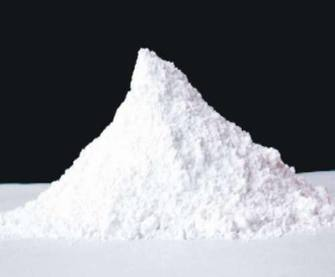

Limestone Powder Price in India: What Affects Cost and How to Compare Suppliers
Limestone powder buyers in India often start with the wrong question — "what's the price per tonne?" The right question is: what's the delivered cost of the right grade, from a reliable supplier, at the consistency my process requires? This guide breaks down every factor that affects limestone powder pricing in India and explains how to evaluate total procurement cost rather than headline rate.

Price Factors Summary
- Mesh size (coarser = cheaper)
- CaCO₃ purity grade
- Coated vs uncoated
- Order volume (MT)
- Packaging (bulk vs bagged)
- Freight from production location
Why Limestone Powder Price Varies So Much
Limestone powder is not a single product — it's a range of materials that share the same base mineral but differ significantly in processing, purity, and application fit. A 100-mesh limestone powder used for road base is a different commercial product from a 400-mesh, 97% CaCO₃ limestone for paint or a low-iron glass-grade limestone. The price difference between these grades can be substantial, which is why quoting "limestone powder price" without specifying grade is essentially meaningless.
The five core factors that determine your price are discussed below.
Factor 1: Mesh Size (Particle Fineness)
Mesh size is the single biggest driver of limestone powder price. Finer grinding requires more milling passes, higher energy input, and slower throughput — all of which increase cost per tonne.
| Mesh Range | Particle Size (approx.) | Typical Applications | Relative Price |
|---|---|---|---|
| 50–100 mesh | 150–300 micron | Road stabilisation, soil amendment, FGD (coarse) | Lowest |
| 100–200 mesh | 75–150 micron | Construction fillers, aglime, glass batch, cement | Low–Medium |
| 200–400 mesh | 38–75 micron | Paints, rubber, plastic fillers (general) | Medium |
| 400–800 mesh | 18–38 micron | Premium paints, PVC, paper filler | High |
| 800–1500 mesh | 10–18 micron | High-end coatings, masterbatch, pharma filler | Highest |
If your application allows a coarser grade, you are leaving cost savings on the table by specifying tighter than necessary. Confirm with your formulation team what the actual minimum mesh requirement is — not what was inherited from a previous specification.
Factor 2: CaCO₃ Purity
Limestone ore in India ranges from ~85% CaCO₃ (lower-grade sedimentary limestone) to 98.5%+ (high-purity crystalline calcite/limestone from Rajasthan deposits). Higher purity means:
- Less impurity (SiO₂, Fe₂O₃, Al₂O₃) in your process
- Higher effective CaO content per tonne (relevant for FGD, glass, chemical applications)
- Better whiteness/brightness (relevant for paints, coatings, paper)
- Higher ore selectivity and beneficiation cost for the supplier → higher price
For applications where purity directly affects performance (glass, pharma, paper coatings), paying for higher purity is justified. For bulk fill applications (road sub-base, soil amendment), standard purity limestone at lower cost is the rational choice.
Purity and Price: Don't Over-Specify
Specifying 98% CaCO₃ for a construction fill application where 92% would perform identically is a direct cost increase with no process benefit. Match your purity specification to your application requirement.
Factor 3: Coated vs Uncoated
Surface-coated limestone powder (stearic acid treatment) is more expensive than uncoated grades of the same mesh because coating adds a processing step, stearic acid material cost, and quality verification (OAN testing).
The price premium for coated grades is justified when your application genuinely requires it:
- PVC compounds (pipes, profiles): Coated grade required for polymer compatibility — uncoated causes poor dispersion and mechanical property failure
- Polyolefin masterbatch and compounding: Coated grade significantly reduces plasticiser demand (lower OAN)
- Solvent-based paints: Coated grade improves dispersion and reduces binder demand
For water-based paints, rubber, construction fill, and agriculture: uncoated grades work fine. Do not pay the coated premium where it adds no functional value. See our guide on stearic acid coating benefits for application-specific guidance.
Factor 4: Order Volume
Limestone powder pricing is highly volume-sensitive. Per-tonne cost for a 1 MT trial order will be significantly higher than for a 25 MT or 50 MT commercial order. This is because:
- Fixed costs of batch setup, quality testing, and documentation are spread across more tonnes on larger orders
- Packaging and filling time per tonne is more efficient on full truck loads vs partial loads
- Freight rate per tonne improves on FTL (full truck load) vs LTL (part load) shipments
If you are evaluating a new grade, a small trial quantity is reasonable — but factor in that the trial cost per tonne will be higher than your commercial rate. Don't reject a supplier based on trial pricing alone; get a commercial volume quote for your actual purchasing quantity.
Factor 5: Logistics — Where the Supplier Is Located
For a bulk mineral like limestone powder, freight is a significant component of the landed cost. A cheaper ex-factory price from a distant supplier can result in a higher landed cost than a slightly more expensive supplier who is closer to your plant.
Rajasthan's production advantage: Alwar and Makrana in Rajasthan are India's primary calcite and limestone processing hubs, with direct rail and road connectivity to:
- NCR (Delhi, Gurgaon, Noida, Faridabad) — ~150–200 km
- Gujarat industrial belt (Ahmedabad, Baroda, Surat) — well-connected via NH48/rail
- Punjab and Haryana industrial zones
- Rajasthan itself (Bhilwara, Jaipur, Jodhpur manufacturing)
For buyers in South India or East India, sourcing from Andhra Pradesh (limestone-rich) or Madhya Pradesh may have a logistics advantage over Rajasthan depending on specific district.
Packaging: Bulk vs Bagged
Packaging choice affects both price and logistics:
| Packaging Type | Weight | Cost Impact | Best For |
|---|---|---|---|
| HDPE woven bags (PP bags) | 25 kg or 50 kg | Higher per-tonne packaging cost | Small orders, manual handling, retail distribution |
| FIBC (jumbo bags / big bags) | 500 kg or 1 MT | Medium packaging cost, lower labour | Medium-scale industrial buyers, semi-bulk handling |
| Bulk tanker / loose | Full truck load | Lowest per-tonne packaging cost | Large-scale continuous consumption, silo storage |
If your consumption is above 10–15 MT/month, switching from 50 kg bags to FIBC jumbo bags or bulk can reduce total material cost measurably — not from a grade change, but purely from packaging efficiency.
How to Compare Limestone Powder Suppliers — Total Cost, Not Just Rate
When evaluating supplier quotes, build a total cost comparison that includes:
- Ex-works price — the supplier's quoted rate
- Freight to your plant — get an actual freight quote, not an estimate
- Packaging cost — included in some quotes, separate in others
- Quality cost — if the supplier cannot provide full COA data (Fe₂O₃, PSD, moisture), you bear the cost of incoming QC testing on your side
- Rejection and reformulation risk — a cheaper, inconsistent grade that causes one batch rejection or reformulation can cost more than a full month's price premium on a reliable grade
The true cost of a limestone powder grade is not on the invoice. It shows up in your process consistency, binder consumption (OAN-driven), production losses, and time spent on supplier management.
What to Specify on Your Purchase Order
Specifying only mesh and price on a purchase order leaves the door open for grade substitution. A complete specification should include:
- ✓ CaCO₃ % minimum — e.g., "minimum 95% CaCO₃"
- ✓ Mesh size with residue limit — e.g., "200 mesh, max 0.5% on-sieve residue"
- ✓ Moisture % maximum — e.g., "max 0.3% moisture"
- ✓ Fe₂O₃ % maximum — if colour or glass application: "max 0.05% Fe₂O₃"
- ✓ Acid insoluble % maximum — e.g., "max 2.0% acid insoluble"
- ✓ Coated/uncoated — specify explicitly; do not leave ambiguous
- ✓ COA requirement — require all above parameters reported on COA per batch
A supplier who accepts this specification and delivers against it reliably is worth more than a supplier who quotes a lower price but cannot document the grade they're supplying.
Limestone vs Calcite Powder — Price and Application Fit
Limestone powder and calcite powder are related but distinct products in the Indian market:
- Limestone powder — typically 90–95% CaCO₃, used for agriculture, construction, FGD, glass batch, water treatment; lower price point for the same mesh
- Calcite powder (GCC) — 97–98.5% CaCO₃, used for paints, plastics, rubber, paper, coatings; priced higher than limestone
If your application works with 92–95% CaCO₃ and does not require high brightness or optical whiteness, specifying calcite/GCC is over-specifying — and you're paying for purity you don't need. See our calcite vs dolomite vs limestone comparison for a detailed breakdown of when each material is appropriate.
How Shikhar Microns Prices Limestone Powder
At Shikhar Microns, we supply limestone powder from Rajasthan with the following pricing transparency:
- Quotes are issued per grade (mesh size + purity + coated/uncoated) with full specification breakdown
- COA is provided with every dispatch — CaCO₃ %, mesh (with residue), moisture, and brightness as standard; Fe₂O₃, SiO₂, and MgO available on request for glass or FGD applications
- Volume-based pricing available for regular offtake (monthly supply agreements)
- Samples available before commercial order — evaluated before you commit
Don't Compare Grades Without Matching Specifications
A quote comparison is only valid if both suppliers are quoting the same mesh, same purity, same packaging, and the same COA completeness. Mismatched grade comparisons routinely lead to procurement decisions that result in process problems.
Frequently Asked Questions
Get a Quote for Your Specific Grade and Volume
Shikhar Microns supplies limestone powder from Rajasthan in 100–600 mesh, with full COA documentation. Tell us your mesh, purity requirement, application, and monthly volume — we'll give you a complete quote with grade specification included.
Request a Quote